AI 驱动的字幕处理工具 — 翻译、编辑、分割、贴文生成
.dmg 文件.dmg，将 SubEditor 拖入 Applications 文件夹由于未经过 Apple 官方签名，首次打开可能出现以下提示：
解决方法（二选一）：
方法一：右键打开
方法二：终端解除隔离属性
xattr -cr /Applications/SubEditor.app此命令仅移除 macOS 对未签名应用的安全标记，不会修改应用本身。
sk-...）API Key 仅存储在本地，重启后自动加载，无需重复输入。
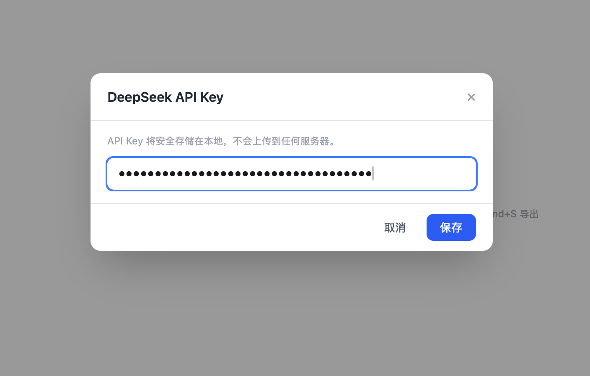
核心功能，用于查看和编辑 SRT 字幕文件。
.srt 文件到窗口EnterBackspace✕Cmd+Z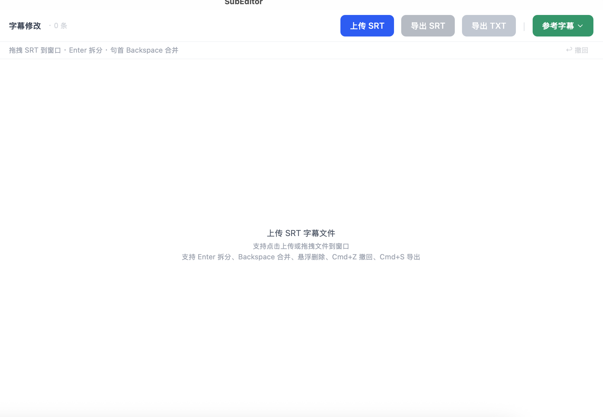
点击「参考字幕」下拉菜单选择模式：
「上传 SRT 参考」→ 左右双栏布局，统一滚动，逐行对照。
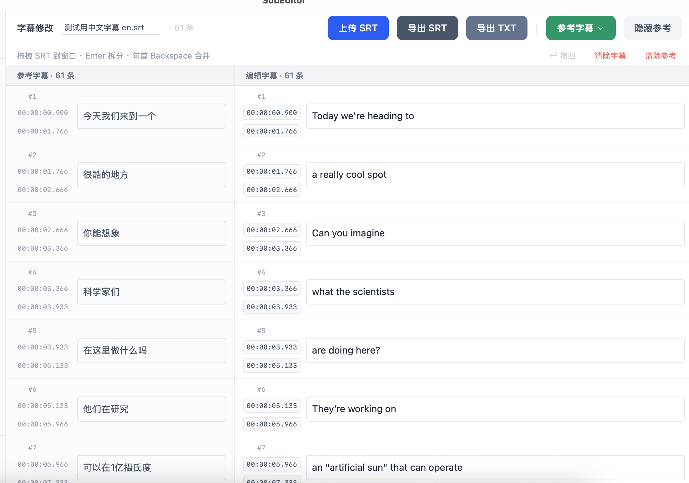
「上传 TXT 文本」或「粘贴纯文本」→ 左侧完整文本区，独立滚动。
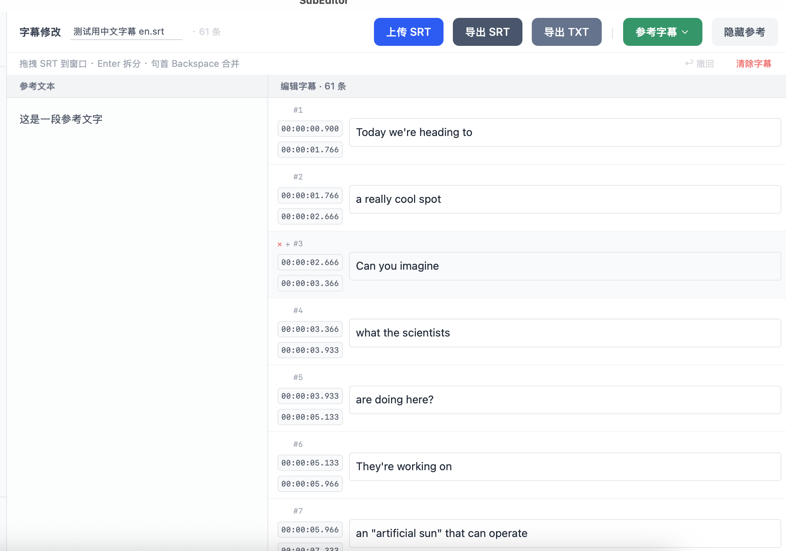
点击行号旁 + 插入空白行，手动对齐。导出时自动跳过空白行。
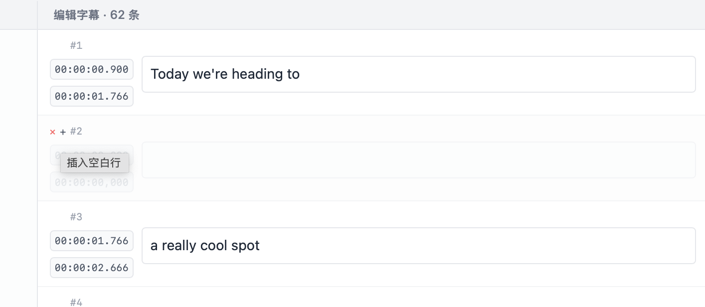
AI 将中文翻译为口语化英文字幕。
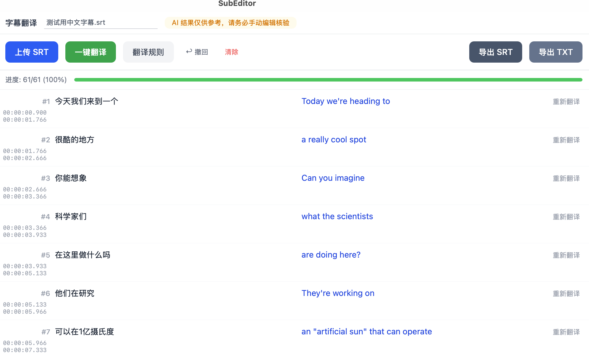
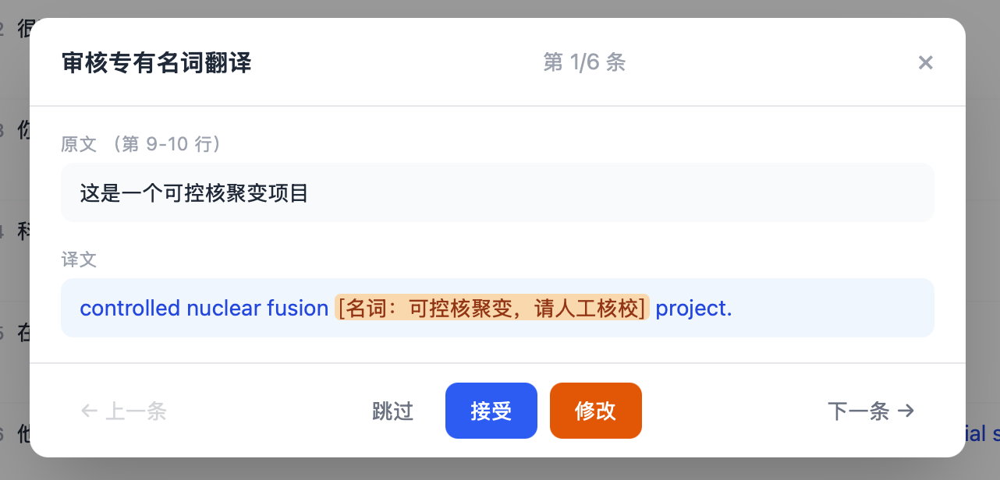
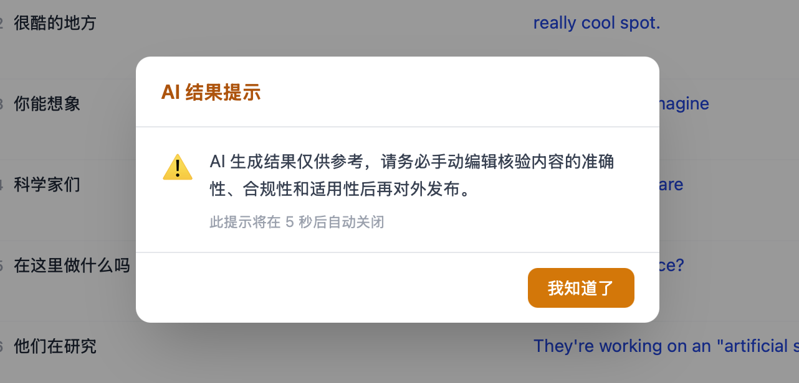
长文本 → 带时间戳的字幕行。
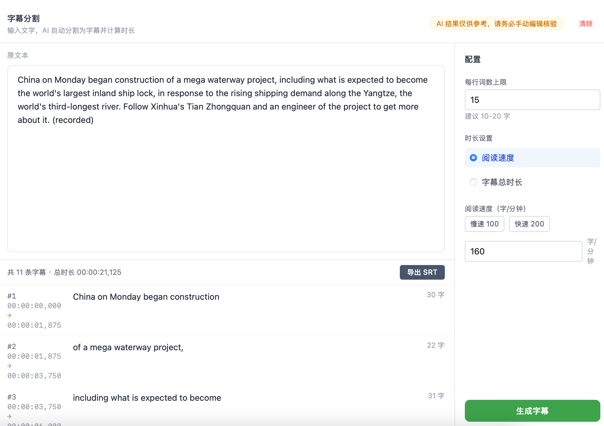
基于字幕内容，AI 生成标题和社交媒体贴文。
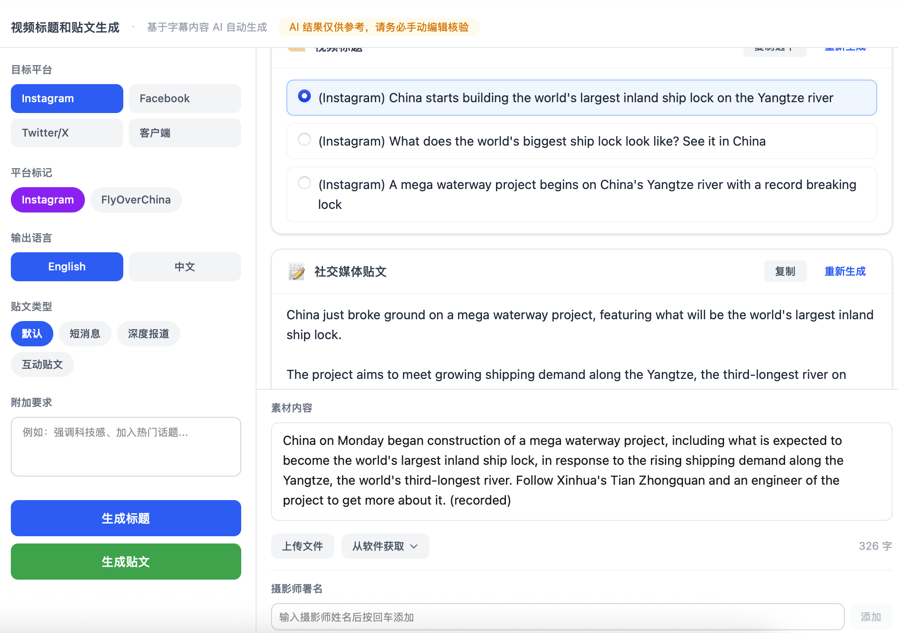
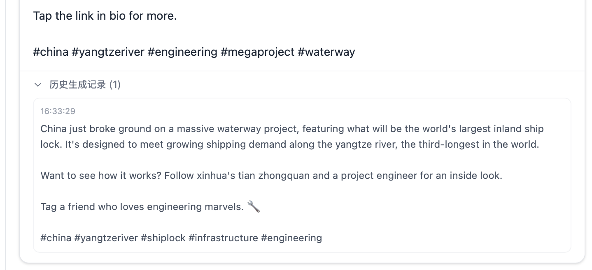
| 快捷键 | 功能 | 页面 |
|---|---|---|
Cmd+Z | 撤销 | 全局 |
Cmd+S | 导出 SRT | 字幕修改 |
Enter | 拆分字幕行 | 字幕修改 |
Backspace | 合并到上一行 | 字幕修改 |
Cmd+Enter | 保存编辑 | 翻译审核 |
Escape | 取消编辑 | 翻译审核 |